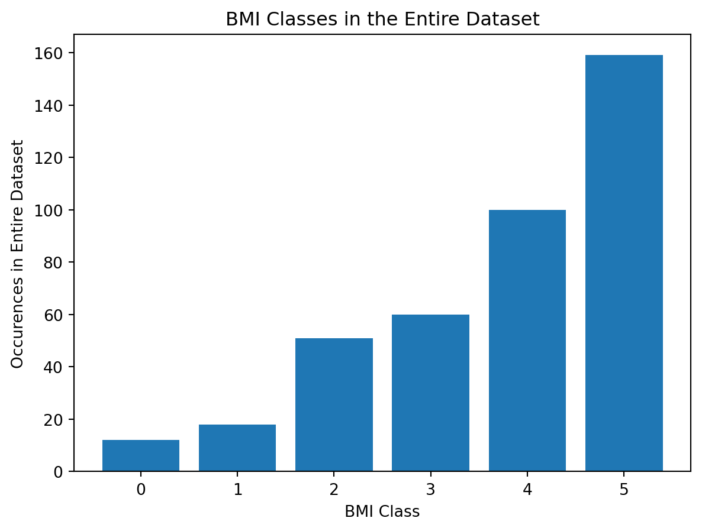
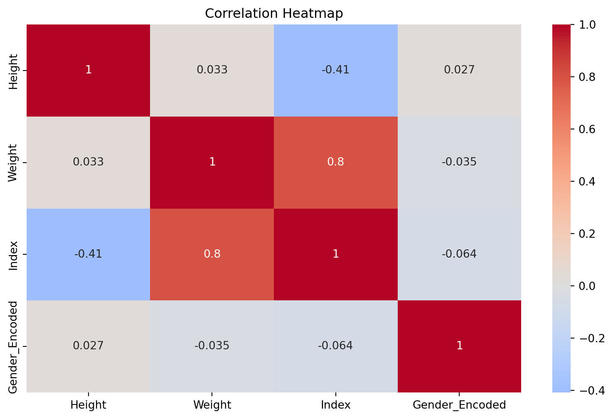
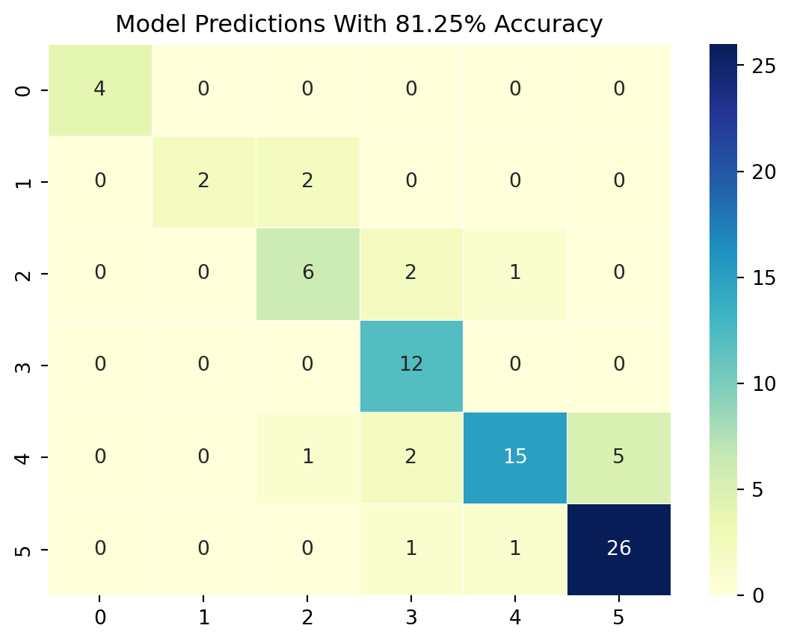
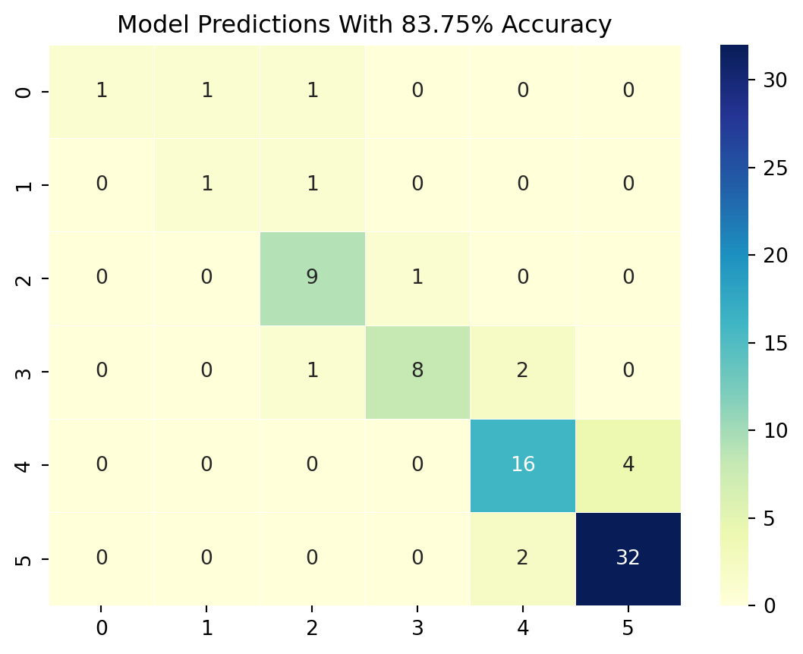
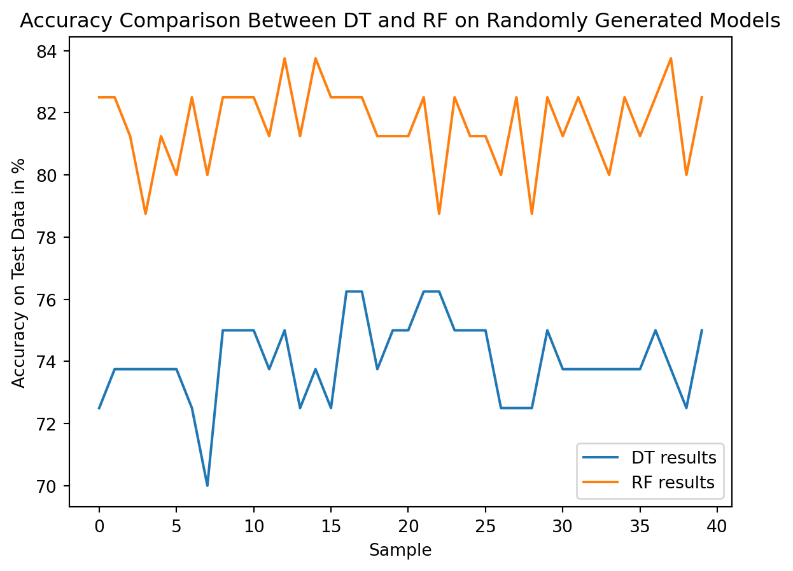

Comparing Decision Tree and Random Forest Classifier Performance
Author: Daniel Hassler
Sample Data Used in Classification
To compare a DecisionTree and a RandomForestClassifier, the first step I took was to gather some data and run some visualizations and analysis. Through Kaggle, I was able to obtain a small dataset on person features and their BMI (Body Mass Index) data. The data consists of just around 400 samples with features: gender, height, and weight, and the goal is to predict BMI.
Code
import numpy as npimport sklearnimport seaborn as snsimport pandas as pdfrom sklearn.metrics import accuracy_scorefrom sklearn.model_selection import train_test_split, cross_val_score, StratifiedKFold, GridSearchCVfrom sklearn.ensemble import RandomForestClassifierfrom sklearn.tree import DecisionTreeClassifier, plot_treefrom sklearn import treeimport matplotlib.pyplot as plt
Code
data = pd.read_csv("./datasets/bmi_train.csv")category_mapping = {'Male': 0, 'Female': 1}data['Gender_Encoded'] = data['Gender'].map(category_mapping) # converts categorical data to numeric data.X = data.drop(['Gender','Index'], axis=1)y = data.drop(['Gender', 'Gender_Encoded', 'Height', 'Weight'], axis=1)print("All X shape: ", X.shape)print("All y shape: ", y.shape)validation_data = pd.read_csv("./datasets/bmi_validation.csv")print("Validation data shape: ", validation_data.shape)X_train, X_test, y_train, y_test = train_test_split(X, y, test_size=0.2)print("X_train shape: ", X_train.shape)print("y_train shape: ", y_train.shape)print("X_test shape: ", X_test.shape)print("y_test shape: ", y_test.shape)
All X shape: (400, 3)
All y shape: (400, 1)
Validation data shape: (100, 3)
X_train shape: (320, 3)
y_train shape: (320, 1)
X_test shape: (80, 3)
y_test shape: (80, 1)
In the above code snippet, I first populated my data into a Pandas dataframe and then split up the data into a “training” and “testing” datasets. I decided to go with an 80/20% split between train and test (with its corresponding labels), as that seems to be the most standard approach in the industry. The significant benefit here is that I possess labeled data on both sets, a challenge in practice. This enables me to make comparisons between predictions and outcomes on my data, eliminating the need to procure any additional “test” data.
Code
# Class imbalance, more obesity.unique_values, counts = np.unique(y, return_counts=True)plt.bar(unique_values, counts)plt.title("BMI Classes in the Entire Dataset")plt.xlabel("BMI Class")plt.ylabel("Occurences in Entire Dataset")plt.show()

The labels are all discrete and sequential, consisting of whole numbers between 0 and 5, further enforcing my intuition for using a classifier approach. A “0” in my case represents someone with an exeptionally low BMI, whereas a “5” depicts an exceptionally high BMI. Based on the distribution of the data, there appears to be a huge class imbalance, heavily favoring the amount of exceptionally high instances in the dataset; this was something I needed to keep in mind when building the classifiers for this dataset.
Code
correlation_matrix = data.corr()# Display a heatmap of the correlation matrixplt.figure(figsize=(10, 6))sns.heatmap(correlation_matrix, annot=True, cmap='coolwarm', center=0)plt.title('Correlation Heatmap')plt.show()
C:\Users\dwh71\AppData\Local\Temp\ipykernel_34560\1253239144.py:1: FutureWarning:
The default value of numeric_only in DataFrame.corr is deprecated. In a future version, it will default to False. Select only valid columns or specify the value of numeric_only to silence this warning.

The correlation matrix depicts the correlation between features (height, weight, gender, BMI) in the dataset. It uses the pearson’s correlation coefficient to compute this: \[
r =
\frac{ \sum_{i=1}^{n}(x_i-\bar{x})(y_i-\bar{y}) }{
\sqrt{\sum_{i=1}^{n}(x_i-\bar{x})^2}\sqrt{\sum_{i=1}^{n}(y_i-\bar{y})^2}}
\]
Based on the features presented, most are not correlated strongly, but there is a glaring strong correlation between weight and BMI.
Building the Decision Tree Model
In order to start the model building process, I decided to tune the hyperparamters first by running a GridSearch
Code
param_grid = {'max_depth': [i for i inrange(2, 10)],'min_samples_leaf': [2** i for i inrange(0, 4)],'criterion': ["entropy", "gini"]}dt = DecisionTreeClassifier(random_state=42)grid_search_dt = GridSearchCV(dt, param_grid, cv=StratifiedKFold(n_splits=5), scoring='accuracy')grid_search_dt.fit(X_train, y_train)best_params_dt = grid_search_dt.best_params_print("Best Hyperparameters:", best_params_dt)print("Best Score:", grid_search_dt.best_score_)
Best Hyperparameters: {'criterion': 'entropy', 'max_depth': 7, 'min_samples_leaf': 2}
Best Score: 0.840625
I recognized that max_depth was an important hyperparameter for the DecisionTree (DT), as the depth of the tree heavily influences overfitting, but other hyperparameters are important as well, such as:
min_samples_leaf: the minimum amount of samples needed in a leaf node of the DT. For example, when min_samples_leaf is set to 10, that means a node won’t split if it has fewer than 10 samples. When this number is higher, the model can create a more generalized tree, although, when the number is smaller, it’ll create more specific splits, resulting in a more complex tree (more potential for overfitting).
criterion: this hyperparameter chooses whether to use entropy or Gini index as a way to calculate dissimilarity in a node. I found that in most cases, entropy outpreformed the Gini index. \[
Entropy(C) = -\sum_{c=1}^Cp(c)\log(p(c))
\]
\[
Gini(C) = 1 - \sum_{c=1}^Cp(c)^2
\]
Now that I’ve determined the necessary hyperparameters for this classifier, I initialize the GridSearchCV object to analyze every combination of the above hyperparameters. Within its search, it goes through an important cross-validation step (cv) that splits the training data into multiple folds and iterates through each fold for each hyperparameter combination.
There were a few options I could’ve chose from for the cv parameter in GridSearchCV, but in order to account for class imbalance like I stated earlier, I decided to go with a StratifiedKFold cross-validator. StratifiedKFold accounts for class label imbalance by keeping an equal precentage of classes for training and testing represented in the dataset. Below is a picture representing this:
I then created a DecisionTreeClassifier with the ‘best’ tuned hyperparameters from the above grid search and populated the y_pred array with the predictions from the test dataset. After that, I plotted the tree out using Sklearn’s plot_tree method.
After plotting the tree, I created a confusion matrix, showing where my predictions fell. Currently, the model sits around 75-86% accurate due to the above hyperparameter values and the randomly generated tree with those hyperparameter values. Not bad for a small dataset with class imbalance.
Code
confusion_matrix = sklearn.metrics.confusion_matrix(y_test, y_pred)conf_df = pd.DataFrame(confusion_matrix, index=[f"{i}"for i inrange(6)], columns=[f"{i}"for i inrange(6)])heatmap = sns.heatmap(conf_df, annot=True, fmt="d", linewidths=0.35, cmap="YlGnBu")plt.title(f"Model Predictions With {(np.sum(confusion_matrix.diagonal()) / y_test.shape[0]) *100:.2f}% Accuracy")
Text(0.5, 1.0, 'Model Predictions With 81.25% Accuracy')

RandomForestClassifer (Ensemble approach)
As above with the DecisionTreeClassifer, I first started to implement the RandomForestClassifier by tuning the hyperparameter values. Since a RandomForest is just a collection of DecisionTrees, RandomForestClassifiers, like a DecisionTreeClassifier, have mostly the same hyperparameters, but the RandomForestClassifier has an extra one for the amount of DecisionTrees that should be included in the forest (n_estimators).
Though this step wasn’t as necessary, since I already did the hyperparameter tuning part for the DecisionTree, but I decided to include it again for the RandomForest with the number of estimators.
It is important to note that the n_estimators hyperparameter won’t cause the model to overfit. In fact, it actually does better at generalization when increasing the number of estimators due to the diversity of opinions the model presents for each unique DecisionTree. The only way overfitting can happen in a RandomForest depends on how the underlying DecisionTrees are set up, not the quantity of them.
Code
param_grid = {'max_depth': [i for i inrange(2, 10)],'min_samples_leaf': [2** i for i inrange(0, 4)],'criterion': ["entropy", "gini"]}rf = RandomForestClassifier(random_state=42)print(y_train.shape)grid_search_rf = GridSearchCV(rf, param_grid, cv=StratifiedKFold(n_splits=5), scoring='accuracy')grid_search_rf.fit(X_train, y_train.values.ravel())best_params_rf = grid_search_rf.best_params_print("Best Hyperparameters:", best_params_rf)print("Best Score:", grid_search_rf.best_score_)
(320, 1)
Best Hyperparameters: {'criterion': 'gini', 'max_depth': 8, 'min_samples_leaf': 1}
Best Score: 0.83125
The above code snippet creates the RandomForestClassifier with the same hyperparameters as the DecisionTree, in addition to the number of estimators (number of decision trees in the forest), trains the classifier, then stores a prediction array.
Here is a visualizaiton of a subset of DecisionTrees in this RandomForest:
After running the model, I checked the accuracy output of the prediction array and found that the RandomForestClassifier was able to increase the accuracy of the predictions by a considerable amount on average.
Code
confusion_matrix = sklearn.metrics.confusion_matrix(y_test, y_pred)conf_df = pd.DataFrame(confusion_matrix, index=[f"{i}"for i inrange(6)], columns=[f"{i}"for i inrange(6)])heatmap = sns.heatmap(conf_df, annot=True, fmt="d", linewidths=0.35, cmap="YlGnBu")plt.title(f"Model Predictions With {(np.sum(confusion_matrix.diagonal()) / y_test.shape[0]) *100:.2f}% Accuracy")
Text(0.5, 1.0, 'Model Predictions With 85.00% Accuracy')

Finally, I decided to calculate the accuracy preformance on multiple samples of RandomForestClassifiers and DecisionTrees at the same time and plot them out in a line chart.
Code
'''Plot a graph that compares the two models, randomly generated with tuned hyperparameter models'''dt_results = []rf_results = []n_samples =40indexes = [i for i inrange(n_samples)]for i in indexes: dt = DecisionTreeClassifier(max_depth=best_params_dt["max_depth"], min_samples_leaf=best_params_dt["min_samples_leaf"], criterion=best_params_dt["criterion"]) dt.fit(X_train, y_train) y_pred_dt = dt.predict(X_test) rf = RandomForestClassifier(n_estimators=300, max_depth=best_params_rf["max_depth"], min_samples_leaf=best_params_rf["min_samples_leaf"], criterion=best_params_rf["criterion"]) rf.fit(X_train, y_train.values.ravel()) y_pred_rf = rf.predict(X_test) confusion_matrix_dt = sklearn.metrics.confusion_matrix(y_test, y_pred_dt) confusion_matrix_rf = sklearn.metrics.confusion_matrix(y_test, y_pred_rf) dt_results.append((np.sum(confusion_matrix_dt.diagonal()) / y_test.shape[0]) *100) rf_results.append((np.sum(confusion_matrix_rf.diagonal()) / y_test.shape[0]) *100)plt.plot(indexes, dt_results, label="DT results")plt.plot(indexes, rf_results, label="RF results")plt.xlabel("Sample")plt.ylabel("Accuracy on Test Data in %")plt.title("Accuracy Comparison Between DT and RF on Randomly Generated Models")plt.legend()plt.show()

Results and Conclusions
After doing simple experimentation with these models, I have found that, on average, the RandomForestClassifier outpreforms just a singular DecisionTreeClassifier. There are several advantages to having a forest of DecisionTrees rather than a singular tree:
More generalizability due to the ensemble approach to this problem
Limits overfitting compared to a DT
DT has high variance and instability, so having a forest of them results in a more collective approach.
Though there is more resource complexity with a forest, the benefits of using that over a DT is worth the tradeoff.